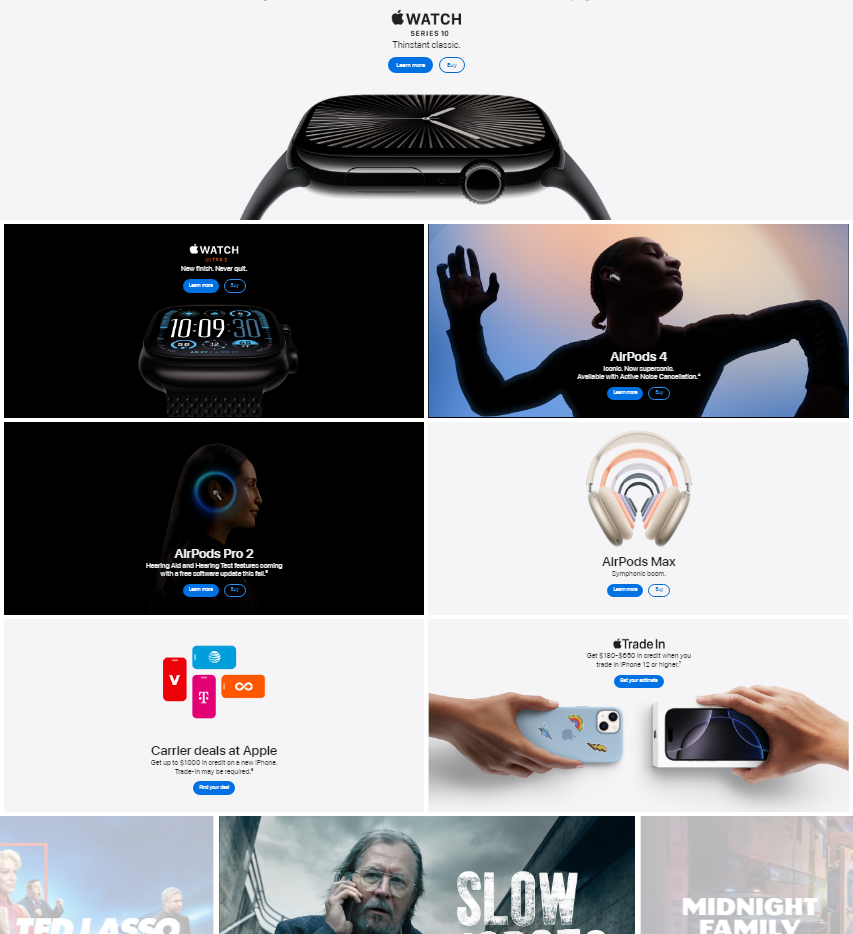
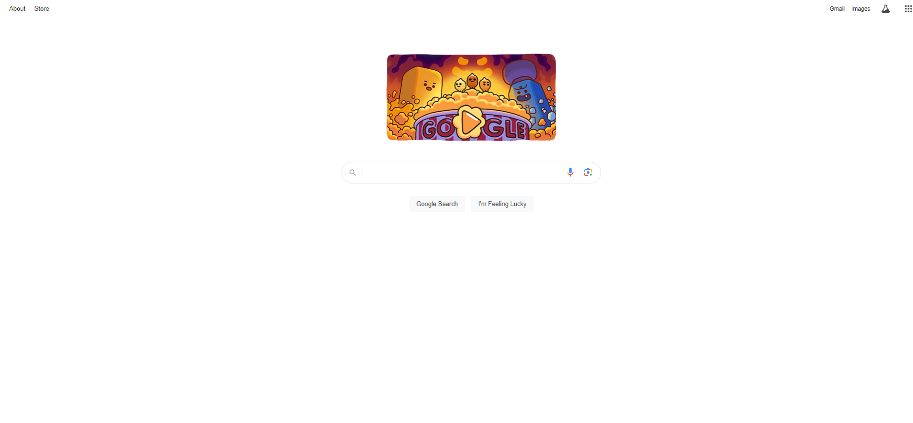
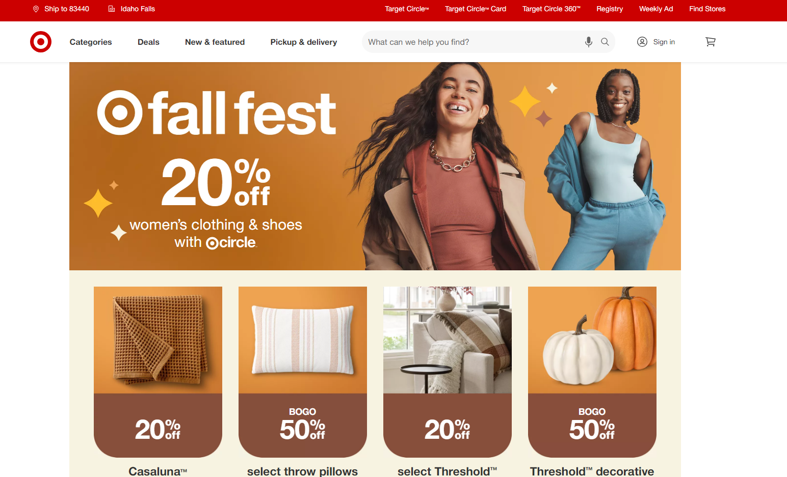

Visual Hierarchy
Company: Apple
Apple’s homepage demonstrates visual hierarchy because large, bold headlines are for new products and smaller text is for supporting details like shows on Apple TV+, guiding users naturally to the most important content like the new apple watch first.
White Space and Clean Design
Company: Google
Google's homepage is a great example of white space because it directs the user's attention to the search bar while being free from distractions like ads and such.
PARC: Contrast
Company: Target
Target I feel uses high contrast between text and background, which makes things easy to read. Best Buy's another website that I feel has good contrast but I can only do three cards.